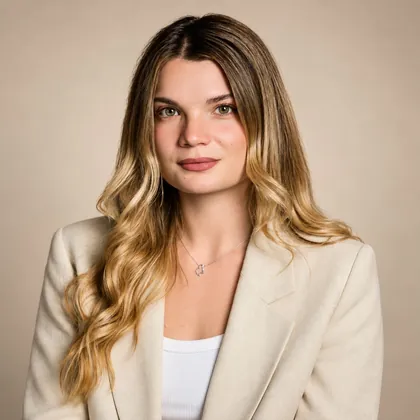
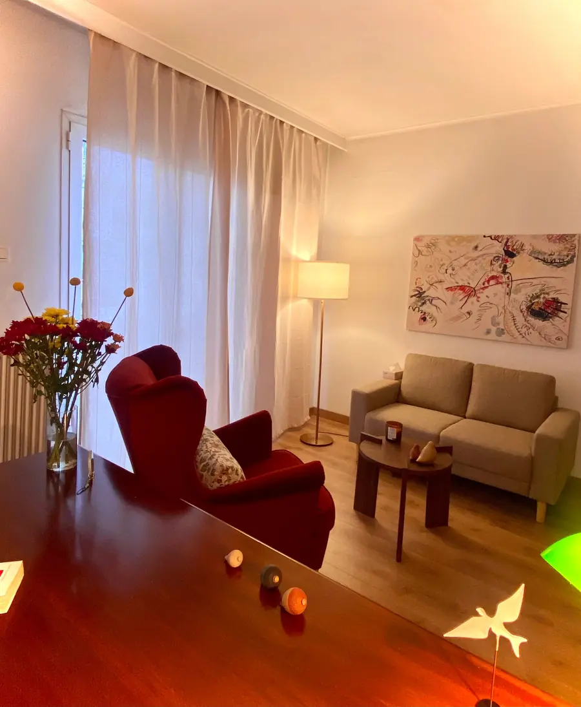
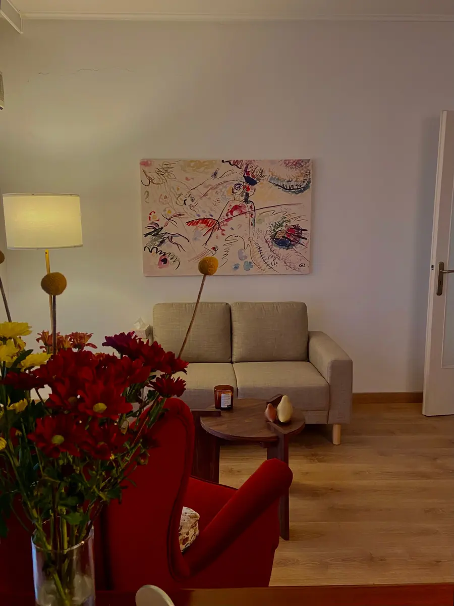

Εξάρχεια · Αθήνα · δια ζώσης & online
Λένια ΚωνσταντινίδουΨυχολόγος (MSc) – Ψυχοθεραπεύτρια στα Εξάρχεια
Ψυχοθεραπεία ενηλίκων και εφήβων με τη Γνωσιακή Συμπεριφοριστική προσέγγιση (CBT) — στο γραφείο μου στα Εξάρχεια ή online. Ένας ασφαλής χώρος για να μιλήσετε για ό,τι σας απασχολεί.


Σχετικά με εμένα
Λένια Κωνσταντινίδου, MSc
Ψυχολόγος (MSc) – Ψυχοθεραπεύτρια · αρ. άδειας 4050/04/08/2020
Είμαι κλινική ψυχολόγος – ψυχοθεραπεύτρια, κάτοχος άδειας άσκησης επαγγέλματος, και δουλεύω με τη Γνωσιακή Συμπεριφοριστική Ψυχοθεραπεία με ενήλικες και εφήβους. Σπούδασα Ψυχολογία στο Πανεπιστήμιο Κρήτης και απέκτησα μεταπτυχιακό τίτλο στην Κλινική Ψυχολογία από το Πανεπιστήμιο Leiden της Ολλανδίας.
Εκπαιδεύομαι στη Γνωσιακή Συμπεριφοριστική Ψυχοθεραπεία στην Εταιρεία Γνωσιακών Συμπεριφοριστικών Σπουδών και έχω ολοκληρώσει μετεκπαίδευση στην Κλινική Ψυχοπαθολογία (Α΄ Ψυχιατρική Κλινική ΕΚΠΑ – ΕΠΙΨΥ) και στην Ψυχοπαθολογία Παιδιού & Εφήβου.
Έχω εργαστεί σε δημόσιες δομές ψυχικής υγείας, στην κατ’ οίκον ψυχιατρική περίθαλψη και στην ψυχοκοινωνική υποστήριξη εφήβων με καρκίνο, καθώς και σε κέντρα θεραπειών με εφήβους και γονείς. Σήμερα συνεργάζομαι με δημόσιες δομές ψυχικής υγείας και κέντρα ψυχοθεραπείας, συμμετέχω σε ερευνητικά προγράμματα και διατηρώ σταθερή εποπτεία και προσωπική ψυχοθεραπεία.
- ΓλώσσεςΕλληνικά, Αγγλικά
- Συνεδρίες50′ · δια ζώσης ή online
- ΠροσέγγισηΓνωσιακή Συμπεριφοριστική
- 2023 – σήμεραΕκπαίδευση στη Γνωσιακή Συμπεριφοριστική ΘεραπείαΕταιρεία Γνωσιακών Συμπεριφοριστικών Σπουδών (ΕΓΣΣ)
- 2023 – 2024Ψυχοπαθολογία Παιδιού & ΕφήβουΕλληνική Εταιρεία για την Προαγωγή της Ψυχιατρικής και των Συναφών Επιστημών
- 2022Μετεκπαίδευση στην Κλινική ΨυχοπαθολογίαΑ΄ Ψυχιατρική Κλινική ΕΚΠΑ · ΕΠΙΨΥ
- 2021 – 2022MSc Κλινική ΨυχολογίαΠανεπιστήμιο Leiden, Ολλανδία
- 2015 – 2020Πτυχίο ΨυχολογίαςΠανεπιστήμιο Κρήτης
- 2026 – σήμεραΙνστιτούτο Έρευνας και Θεραπείας της Συμπεριφοράς
- 2024 – σήμεραΕταιρεία Κοινωνικής Ψυχιατρικής Π. Σακελλαρόπουλος
- 2023 – σήμεραΙδιωτικό γραφείο
- 2022 – 2025Κέντρα ειδικών θεραπειών · εφήβοι & γονείς
- 2022 – 2023ΑΛΜΑ – Πανελλήνιος Σύλλογος Προσαρμοσμένων Δραστηριοτήτων
- 2021ΑμΚΕ ΙΑΣΙΣ · κατ’ οίκον ψυχιατρική περίθαλψη
- 2019Σύλλογος Φίλων Παιδιών με Καρκίνο «ΕΛΠΙΔΑ»
- 14ο Πανελλήνιο Συνέδριο Ψυχιατρικής Παιδιού & Εφήβου · poster (2025)
- 19ο Πανελλήνιο Συνέδριο Ψυχολογικής Έρευνας (ΕΛΨΕ) · στρογγυλό τραπέζι
- Εργαστήρια ΕΓΣΣ 2024: ΙΨΔ, πένθος, κατάθλιψη, άγχος και διαταραχές τικ σε παιδιά & εφήβους
- MScΚλινική Ψυχολογία · Πανεπιστήμιο Leiden
- CBTΓνωσιακή Συμπεριφοριστική Ψυχοθεραπεία
- 10/10στο doctoranytime · δεκάδες αξιολογήσεις
- 50′συνεδρίες δια ζώσης στα Εξάρχεια ή online
Η προσέγγισή μου
Ένας ασφαλής χώρος για να ξετυλίξετε ό,τι σας απασχολεί
Η ψυχοθεραπεία ξεκινά από έναν ασφαλή χώρο, όπου μπορείτε να εκφραστείτε ελεύθερα, χωρίς να νιώθετε ότι κρίνεστε. Μέσα από μια σχέση εμπιστοσύνης, γνωρίζουμε μαζί σε βαθύτερο επίπεδο τον εαυτό σας και τις ανάγκες σας.
Δουλεύω με τη Γνωσιακή Συμπεριφοριστική Ψυχοθεραπεία (CBT), μια δομημένη και επιστημονικά τεκμηριωμένη προσέγγιση. Μαζί αναγνωρίζουμε τα μοτίβα σκέψης, τα συναισθήματα και τις συμπεριφορές που σας δυσκολεύουν, διερευνούμε τις ρίζες τους και καλλιεργούμε πιο λειτουργικούς τρόπους να σχετίζεστε με τον εαυτό σας και με τους άλλους.
Κάθε θεραπεία προσαρμόζεται στον άνθρωπο που έχω απέναντί μου. Θέτουμε μαζί στόχους, προχωράμε με τον δικό σας ρυθμό και αποκτάτε εργαλεία που μπορείτε να χρησιμοποιείτε και έξω από το γραφείο, στην καθημερινότητά σας.
Σαν ένα κουβάρι που ξετυλίγεται: λίγο λίγο, με υπομονή, ό,τι μπερδεύτηκε βρίσκει ξανά τη σειρά του.
Ασφαλής χώρος
Εμπιστευτικότητα, αποδοχή και χρόνος για να μιλήσετε για ό,τι σας απασχολεί.
Κατανόηση των μοτίβων
Πώς συνδέονται οι σκέψεις, τα συναισθήματα και οι αντιδράσεις σας — και από πού ξεκινούν.
Πρακτικά εργαλεία
Τεχνικές της CBT που δοκιμάζουμε μαζί και εφαρμόζετε στην καθημερινότητα.
Ξετυλίγοντας το κουβάρι
Πώς δουλεύει η Γνωσιακή Συμπεριφοριστική Θεραπεία
Διαλέξτε τι σας απασχολεί και σύρετε το κουβάρι: ο κόμπος από σκέψεις, συναισθήματα και αντιδράσεις ξετυλίγεται, χάντρα χάντρα.
- Η σκέψη
- Το συναίσθημα & το σώμα
- Η αντίδραση
- Στη θεραπεία
Τα παραδείγματα είναι ενδεικτικά — κάθε άνθρωπος και κάθε θεραπεία είναι διαφορετικοί. Τη δική σας εικόνα τη βρίσκουμε μαζί.
Θέματα που δουλεύουμε
Ψυχοθεραπεία για ενήλικες και εφήβους στα Εξάρχεια
Κάθε συνεδρία διαρκεί 50 λεπτά, δια ζώσης στο γραφείο ή online με βιντεοκλήση. Υπάρχει ειδικό κόστος για φοιτητές και ανέργους.
-
Ατομικές συνεδρίες για ό,τι σας απασχολεί: άγχος, διάθεση, σχέσεις, αλλαγές ζωής ή ζητήματα ταυτότητας και προσωπικής ανάπτυξης. Με βάση τη Γνωσιακή Συμπεριφοριστική Ψυχοθεραπεία, κατανοούμε πώς συνδέονται οι σκέψεις, τα συναισθήματα και οι συμπεριφορές σας και θέτουμε μαζί συγκεκριμένους στόχους. Οι συνεδρίες διαρκούν 50 λεπτά και γίνονται στο γραφείο στα Εξάρχεια ή online.
-
Η εφηβεία φέρνει πολλές αλλαγές και συχνά έντονα συναισθήματα. Στις συνεδρίες ο έφηβος βρίσκει έναν χώρο να μιλήσει χωρίς να κρίνεται, για το σχολείο, τις φιλίες, την οικογένεια, το άγχος ή τη διάθεση. Έχω εργαστεί με εφήβους σε δημόσιες δομές ψυχικής υγείας και σε κέντρα θεραπειών, όπου συχνά η δουλειά περιλάμβανε και συνεδρίες με τους γονείς, ώστε η οικογένεια να στηρίζει την πρόοδο.
-
Το άγχος είναι φυσική αντίδραση, όταν όμως γίνεται συνεχές ή έντονο επηρεάζει τον ύπνο, τη δουλειά και τις σχέσεις. Οι κρίσεις πανικού μπορεί να τρομάζουν, με ταχυπαλμία, ζάλη ή δύσπνοια. Η CBT είναι από τις πιο τεκμηριωμένες προσεγγίσεις για αγχώδεις διαταραχές: μαθαίνουμε να αναγνωρίζουμε τις σκέψεις που τροφοδοτούν το άγχος, να διαχειριζόμαστε τα σωματικά συμπτώματα και να επιστρέφουμε σταδιακά σε ό,τι αποφεύγεται.
-
Όταν η διάθεση πέφτει για καιρό, όλα μοιάζουν πιο βαριά: η κούραση, η έλλειψη ενδιαφέροντος, οι αρνητικές σκέψεις για τον εαυτό και το μέλλον. Στη θεραπεία εξετάζουμε μαζί αυτές τις σκέψεις, επαναφέρουμε σταδιακά δραστηριότητες που δίνουν χαρά και νόημα και χτίζουμε τρόπους να φροντίζετε τον εαυτό σας στις δύσκολες μέρες. Η πρόοδος γίνεται βήμα βήμα, με τον δικό σας ρυθμό.
-
Οι φοβίες και η ιδεοψυχαναγκαστική διαταραχή (ΙΨΔ) περιορίζουν την καθημερινότητα: αποφυγή, επίμονες σκέψεις που προκαλούν άγχος και επαναλαμβανόμενες συμπεριφορές που ανακουφίζουν μόνο προσωρινά. Η Γνωσιακή Συμπεριφοριστική Θεραπεία προσφέρει δομημένες τεχνικές, όπως η σταδιακή έκθεση, που εφαρμόζονται με προσοχή και σεβασμό στα όρια του καθενός, ώστε να μειωθεί η δύναμη του φόβου.
-
Η απώλεια ενός αγαπημένου προσώπου, μιας σχέσης ή μιας σημαντικής πτυχής της ζωής φέρνει θλίψη, κενό, θυμό ή ενοχές. Δεν υπάρχει «σωστός» τρόπος ή χρόνος για να πενθήσει κανείς. Στις συνεδρίες δίνουμε χώρο σε όσα νιώθετε, κατανοούμε τι σας κρατά στάσιμους και βρίσκουμε τρόπους να συνεχίσετε τη ζωή σας κρατώντας ζωντανή τη σχέση με ό,τι χάθηκε.
-
Η επαγγελματική εξουθένωση δεν είναι απλή κούραση: είναι μια κατάσταση σωματικής και συναισθηματικής εξάντλησης που συχνά συνοδεύεται από κυνισμό και αίσθημα αναποτελεσματικότητας. Στη θεραπεία εντοπίζουμε τις πηγές πίεσης, τις πεποιθήσεις που σας κρατούν σε υπερπροσπάθεια και δουλεύουμε όρια, ρυθμούς και αποφόρτιση, ώστε να ξαναβρείτε ενέργεια και ισορροπία.
-
Πονοκέφαλοι, στομαχικές ενοχλήσεις, μυϊκή ένταση ή κόπωση χωρίς σαφή ιατρική αιτία συχνά συνδέονται με το στρες και τα συναισθήματα. Μαζί κατανοούμε πώς επικοινωνούν σώμα και ψυχή, αναγνωρίζουμε τι πυροδοτεί τα συμπτώματα και μαθαίνουμε τεχνικές διαχείρισης. Η ψυχοθεραπεία λειτουργεί συμπληρωματικά με την ιατρική παρακολούθηση, όπου αυτή χρειάζεται.
-
Οι δυσκολίες στις διαπροσωπικές και οικογενειακές σχέσεις, οι συχνές συγκρούσεις ή η δυσκολία να βάλουμε όρια μας κουράζουν βαθιά. Δουλεύουμε την επικοινωνία, τη διαχείριση του θυμού και την έκφραση των αναγκών σας. Στις συνεδρίες γυναικείας ενδυνάμωσης δίνουμε χώρο στην αυτοεκτίμηση, στους ρόλους και στις προσδοκίες που βαραίνουν, ώστε να επιλέγετε πιο ελεύθερα για τον εαυτό σας.
-
Αν δεν μπορείτε να έρθετε στο γραφείο, οι συνεδρίες γίνονται και μέσω βιντεοκλήσης, με την ίδια διάρκεια, δομή και εμπιστευτικότητα. Χρειάζεστε μόνο έναν ήσυχο χώρο, όπου νιώθετε άνετα, και μια σταθερή σύνδεση. Οι online συνεδρίες βοηθούν όσους μένουν μακριά, ταξιδεύουν ή έχουν απαιτητικό πρόγραμμα, και γίνονται στα ελληνικά ή στα αγγλικά.
Πώς ξεκινάμε
Από το πρώτο τηλεφώνημα στην πρώτη αλλαγή
- 1
Επικοινωνία
Τηλεφωνήστε μου ή στείλτε email. Μιλάμε λίγο για το τι σας απασχολεί και βρίσκουμε μια ώρα που σας εξυπηρετεί.
- 2
Η πρώτη συνεδρία
Γνωριζόμαστε. Μου λέτε τι σας έφερε, με τον ρυθμό σας, και σας εξηγώ πώς δουλεύουμε. 50 λεπτά, δια ζώσης ή online.
- 3
Κοινοί στόχοι
Συνδέουμε τα κομμάτια και ορίζουμε μαζί τι θα θέλατε να αλλάξει — ένα σχέδιο που μπορεί να προσαρμόζεται.
- 4
Βήμα βήμα
Τακτικές συνεδρίες, συνήθως εβδομαδιαίες, με εργαλεία για την καθημερινότητα και χρόνο να δούμε την πρόοδο.
Ο χώρος
Ένα ήσυχο, φωτεινό γραφείο στον 5ο όροφο
Ζεστό φως, ένας άνετος καναπές και ηρεμία, στην καρδιά της Αθήνας — λίγα λεπτά από τον σταθμό Ομόνοια.




Αξιολογήσεις
Τι λένε όσοι ξεκίνησαν τη θεραπεία
Τρομερή επαγγελματίας, με βοήθησε να ξεκλειδωθώ. Την προτείνω ανεπιφύλακτα
Ioanna18 Σεπτεμβρίου 2026 · doctoranytime
Θα ήθελα να εκφράσω την ειλικρινή μου ευγνωμοσύνη για την συνεργασία μας. Ένιωσα από την πρώτη συνεδρία μια μοναδική οικειότητα και ζεστασιά που με βοήθησε να ανοιχτω και να μιλήσω για τα θέματα που με απασχολούν. Την διακρίνει η υπομονή,η η ηρεμία, ο επαγγελματισμός και η ικανότητα να ακούει πραγματικά, εντοπίζοντας την ουσία του προβλήματος . Την συνιστώ ανεπιφύλακτα για την ουσιαστική υποστήριξη που μου προσφέρει γιατί οι κατευθύνσεις της είναι κατατοπιστικές και ουσιαστικές.
Βιβή09 Σεπτεμβρίου 2026 · doctoranytime
Εξαιρετική ψυχολόγος! Πολύ ευγενική και πραγματικά πρόθυμη να σε ακούσει. Από την πρώτη στιγμή σε κάνει να νιώθεις άνετα..Τη συστήνω ανεπιφύλακτα!!!
Δημήτρης09 Σεπτεμβρίου 2026 · doctoranytime
Είμαι πραγματικά πολύ ευχαριστημένη από τη συνέργασία μας. Από την πρώτη στιγμή ένιωσα άνετα και ότι βρίσκομαι σε έναν ασφαλή χώρο όπου μπορώ να μιλήσω ελεύθερα, χωρίς να νιώθω ότι κρίνομαι. Είναι πολύ υποστηρικτική, με ακούει ουσιαστικά και με βοηθά να βλέπω τα πράγματα πιο καθαρα και λογικά. Τη συστήνω πραγματικά ανεπιφύλακτα γιατί πέρα από άξια επαγγελματίας είναι και αξιόλογος άνθρωπος.
eri09 Σεπτεμβρίου 2026 · doctoranytime
Η κυρία Κωσταντινίδου είναι μια εξαιρετική επαγγελματίας που έχει όρεξη για δουλειά. Πραγματικά ασχολείται με τον άνθρωπο που έχει απέναντι της, είναι φανερό πως αφιερώνει χρόνο όχι μόνο σε κάθε συνεδρία μας αλλά και εκτός συνεδριών και φροντίζει να είναι διαθέσιμη όποτε την χρειαστώ. Είναι πάντα συνεπής, τυπική, διαβασμένη και αφοσιωμένη στη δουλειά της αλλά και εξοπλισμένη με πολλή κατανόηση.Μέσα από τις συνεδρίες μας έχω δει ουσιαστική και πραγματική διαφορά.
irida07 Σεπτεμβρίου 2026 · doctoranytime
Εξαιρετική επιστήμονας! Διαθέτει όλα τα χαρακτηριστικά που καθιστούν μία ψυχολόγο ιδανική. Ηρεμία, υπομονή συνέπεια και διάθεση να βοηθήσει. Τη συστήνω ανεπιφύλακτα
ΙΩΑΝΝΑ04 Σεπτεμβρίου 2026 · doctoranytime
Είμαι πραγματικά πάρα πολύ ικανοποιημένη από την εμπειρία μου με την κυρία Λένια .Από την πρώτη στιγμή ένιωσα ασφάλεια, αποδοχή και εμπιστοσύνη, χωρίς καμία διάθεση κριτικής. Είναι ένας άνθρωπος με βαθιά κατανόηση, ενσυναίσθηση και επαγγελματισμό, που ακούει ουσιαστικά και προσπαθεί να κατανοήσει σε βάθος όσα σε απασχολούν. Την συστήνω ανεπιφύλαχτα σε όποιον αναζητά έναν πραγματικά αξιόπιστο, υποστηρικτικό και ανθρώπινο επαγγελματία.
Marina04 Σεπτεμβρίου 2026 · doctoranytime
Εύστοχη με ευαισθησία και αποτελεσματική προσέγγιση. Ευγενική και φωτεινή παρουσία με γνώση και διορατικότητα, μου ενέπνευσε εμπιστοσύνη, και με την θεραπευτική της καθοδήγηση αναγνώρισα τι με ενοχλούσε, και βελτίωσα την καθημερινότητά μου και την ψυχική μου αντοχή.
despoina02 Ιουλίου 2026 · doctoranytime
Πραγματικά εξαιρετική επιστήμονας αλλά το κυριότερο ένας υπέροχος άνθρωπος. Στις πρώτες συνεδρίες μας ήμουν σε άρνηση και με τον τρόπο της, σεβόμενη τα όρια μου και καταλαβαίνοντας πραγματικά τι χρειαζόμουν με βοήθησε να ξεδιπλωθώ και σιγά σιγά να πάρω τα πάνω μου. Ειναι ίσως από τους ψυχοθεραπευτές που κάνουν και παραπάνω από αυτά που χρειάζονται.
Κωνσταντινα30 Ιουνίου 2026 · doctoranytime
Εξαιρετική επαγγελματίας και πάνω απ' όλα άνθρωπος. Με άκουσε με προσοχή και ενσυναίσθηση, με έκανε να νιώσω άνετα από την πρώτη κιόλας συνεδρία και με βοήθησε ουσιαστικά να κατανοήσω και να διαχειριστώ όσα με απασχολούσαν. Πάντα συνεπής, υποστηρικτική και με πραγματικό ενδιαφέρον. Τη συστήνω ανεπιφύλακτα σε όποιον αναζητά έναν ψυχοθεραπευτή που εμπνέει εμπιστοσύνη και ασφάλεια.
Ευτυχία30 Ιουνίου 2026 · doctoranytime
Με έκανε να νιώσω άνετα από την πρώτη συνεδρία. Άκουσε προσεκτικά όσα είχα να πω και με βοήθησε να δω την κατάσταση πιο ξεκάθαρα. Την συστήνω ανεπιφύλακτα.
ΚΩΝΣΤΑΝΤΙΝΟΣ13 Ιουνίου 2026 · doctoranytime
Η Λενια μου ενέπνευσε αμέσως εμπιστοσύνη και έδειξε βαθιά κατανόηση του προβλήματος. Σημαντική και η συνέπεια στα ραντεβού!
Ορέστης12 Ιουνίου 2026 · doctoranytime
Ήρθα στην κυρία Κωνσταντινίδου από συστάσεις που είχα ακούσει!! Εξαιρετική επαγγελματίας και άνθρωπος! Μέσα από την συνεργασία μας έχω βοηθηθεί πάρα πολύ! Την συστήνω ανεπιφύλακτα !
Όλια12 Ιουνίου 2026 · doctoranytime
Συχνές ερωτήσεις
Συχνές ερωτήσεις για την ψυχοθεραπεία
Πόσο διαρκεί μια συνεδρία;
Κάθε συνεδρία διαρκεί 50 λεπτά, είτε γίνεται δια ζώσης στο γραφείο στα Εξάρχεια είτε online. Συνήθως οι συνεδρίες γίνονται μία φορά την εβδομάδα, ιδιαίτερα στην αρχή, ώστε να υπάρχει συνέχεια και σταθερός ρυθμός στη δουλειά μας.
Πώς κλείνω το πρώτο ραντεβού;
Τηλεφωνήστε μου στο 698 636 1253 ή στείλτε email στο leniakonstantinidou.psy@gmail.com. Μπορείτε επίσης να κλείσετε ραντεβού online μέσω του doctoranytime. Στην πρώτη επικοινωνία μιλάμε λίγο για το τι σας απασχολεί και βρίσκουμε μια ώρα που σας εξυπηρετεί.
Τι είναι η Γνωσιακή Συμπεριφοριστική Θεραπεία (CBT);
Η CBT είναι μια δομημένη, επιστημονικά τεκμηριωμένη μορφή ψυχοθεραπείας. Εστιάζει στο πώς συνδέονται οι σκέψεις, τα συναισθήματα και οι συμπεριφορές μας και βοηθά να αλλάξουμε τα μοτίβα που μας δυσκολεύουν, με πρακτικά εργαλεία για την καθημερινότητα.
Γίνονται συνεδρίες online;
Ναι. Οι online συνεδρίες γίνονται μέσω βιντεοκλήσης, με την ίδια διάρκεια και την ίδια εμπιστευτικότητα με τις δια ζώσης. Χρειάζεστε μόνο έναν ήσυχο, ιδιωτικό χώρο και μια σταθερή σύνδεση στο διαδίκτυο.
Πόσο διαρκεί συνολικά η θεραπεία;
Εξαρτάται από τον άνθρωπο και από αυτό που φέρνει. Ορισμένες δυσκολίες βελτιώνονται μέσα σε λίγους μήνες, ενώ άλλες χρειάζονται περισσότερο χρόνο. Θέτουμε μαζί στόχους και αξιολογούμε τακτικά την πρόοδο, ώστε να ξέρετε πάντα πού βρίσκεστε.
Είναι όσα λέω εμπιστευτικά;
Ναι. Όσα συζητάμε στις συνεδρίες παραμένουν απόρρητα, σύμφωνα με τον κώδικα δεοντολογίας των ψυχολόγων. Οι μόνες εξαιρέσεις προβλέπονται από τον νόμο, όταν υπάρχει σοβαρός κίνδυνος για τη ζωή κάποιου.
Δουλεύετε με εφήβους;
Ναι. Δουλεύω με εφήβους σε ατομικές συνεδρίες, ενώ όταν βοηθά, ορισμένες συναντήσεις γίνονται και με τους γονείς. Ο έφηβος βρίσκει έναν χώρο όπου μπορεί να μιλήσει ελεύθερα για όσα τον απασχολούν.
Τι να περιμένω από την πρώτη συνεδρία;
Η πρώτη συνεδρία είναι κυρίως μια γνωριμία. Μου λέτε τι σας έφερε, με τον ρυθμό σας και χωρίς πίεση, κάνω ερωτήσεις για να κατανοήσω την εικόνα και σας εξηγώ πώς δουλεύουμε. Στο τέλος αποφασίζετε ελεύθερα αν θέλετε να συνεχίσουμε.
Υπάρχει ειδική τιμή για φοιτητές ή ανέργους;
Ναι, υπάρχει ειδικό κόστος συνεδρίας για φοιτητές και ανέργους. Ρωτήστε με στο τηλέφωνο ή στο email για τις λεπτομέρειες.
Πού βρίσκεται το γραφείο;
Το γραφείο βρίσκεται στη Μπόταση 9, στον 5ο όροφο, στα Εξάρχεια, λίγα λεπτά με τα πόδια από τον σταθμό μετρό Ομόνοια, ανάμεσα στη Στουρνάρη και τη Σολωμού, απέναντι από το Πολυτεχνείο.
Λένια Κωνσταντινίδου
Ψυχολόγος (MSc) – Ψυχοθεραπεύτρια
Επικοινωνία
Κλείστε ένα ραντεβού
Τηλεφωνήστε μου ή στείλτε email — ή κλείστε online μέσω doctoranytime.
- 698 636 1253
- leniakonstantinidou.psy@gmail.com
- Μπόταση 9, 5ος όροφος
106 82 Αθήνα (Εξάρχεια) - Online συνεδρίες με βιντεοκλήση
Ώρες γραφείου
- Δευτέρα18:00 – 22:00
- Τρίτη18:00 – 22:00
- Τετάρτη18:00 – 22:00
- Πέμπτη18:00 – 22:00
- ΠαρασκευήΚλειστά
- ΣάββατοΚλειστά
- ΚυριακήΚλειστά
Πώς θα έρθετε
Το γραφείο βρίσκεται στη Μπόταση 9, στον 5ο όροφο, στα Εξάρχεια — στο κέντρο της Αθήνας, στο κομμάτι της Μπόταση ανάμεσα στη Στουρνάρη και τη Σολωμού, απέναντι από το Πολυτεχνείο. Από τον σταθμό μετρό Ομόνοια (γραμμές 1 και 2) είναι περίπου 7–8 λεπτά με τα πόδια, μέσω Πατησίων και Στουρνάρη· από τον σταθμό Πανεπιστήμιο περίπου 10 λεπτά. Πολλά τρόλεϊ και λεωφορεία σταματούν στην Πατησίων, στο Πολυτεχνείο και στο Εθνικό Αρχαιολογικό Μουσείο.
Οδηγίες στο Google Maps